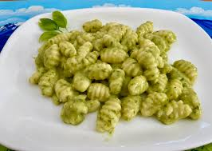

Gnocchi
Home

Description
Homemade potato gnocchi is delicious topped with all kinds of sauces.
Ingredients
- 2 pounds whole russet baking potatoes
- 1 1/2 cups all-purpose flour
- 2 egg yolks, beaten
- Pinch kosher salt
- Your favorite pasta sauce
Steps
- Preheat the oven to 350°F
- Bake the potatoes
- Mash and fluff the potatoes
- Add the flour, egg, salt and mix into a ball of dough
- Roll pieces of the dough into long cylinders
- Cut the dough into pieces and form indentations
- Drop the gnocchi into simmering water
- Serve with sauce